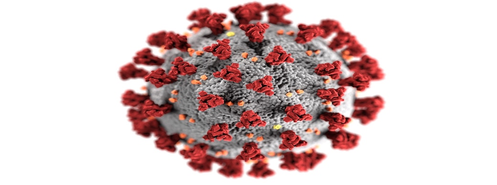

COVID-19 Diagnosis
A groundbreaking project aimed at revolutionizing COVID-19 detection using innovative technology. This endeavor showcases the creation of an intuitive Streamlit WebApp that provides rapid assessments of whether an uploaded chest X-ray image indicates a COVID-19 infection, delivering results within mere seconds.
Project Synopsis:
Timely and accurate detection of COVID-19 from chest X-ray images is a critical component of efficient patient care. This project leverages the capabilities of artificial intelligence and deep learning for image recognition, presenting a novel solution to expedite diagnosis while optimizing resources. The dataset encompasses two image categories: normal and COVID-19 positive.
Deep Learning Models and Training:
Within this study, three distinct deep learning models were employed: Convolutional Neural Network (CNN), InceptionResnetV2 with binary cross entropy loss, and InceptionResnetV2 with focal loss – a custom loss function tailored for binary classification tasks. To gauge model performance, accuracy was assessed on both train and test datasets:
- CNN yielded an accuracy of 90.38% on the training set.
- InceptionResnetV2 with binary cross entropy loss achieved a training accuracy of 98.08%, but exhibited signs of overfitting with a test accuracy of 87.25%.
- InceptionResnetV2 utilizing focal loss emerged as the most proficient model, boasting a remarkable 99.06% accuracy on the training set and an impressive 99.35% accuracy on the test set.
Streamlit WebApp for Swift Diagnosis:
The culmination of this project is a user-friendly Streamlit WebApp designed to empower healthcare professionals and patients alike. This WebApp facilitates swift and accurate assessment of COVID-19 infections based on chest X-ray images. With a seamless user interface, the app enables users to upload images and obtain rapid results – a crucial factor in enhancing diagnostic efficiency and reducing costs.
Future Prospects and Applications:
This project's ramifications extend beyond its current scope. Rapid and accurate diagnosis through deep learning techniques holds potential not only for COVID-19 but also for various medical conditions. The integration of artificial intelligence into medical diagnostics promises enhanced precision and expediency, ultimately transforming patient care.
Conclusion and Reflections:
In summary, this project showcases the marriage of advanced technology and medical diagnostics. The Streamlit WebApp's ability to swiftly evaluate chest X-ray images for COVID-19 highlights the power of AI in enhancing healthcare workflows. The successful deployment of the InceptionResnetV2 model with focal loss underscores the potential of tailored solutions to address complex challenges. As we move forward, I remain committed to furthering the capabilities of AI in the medical domain and beyond.